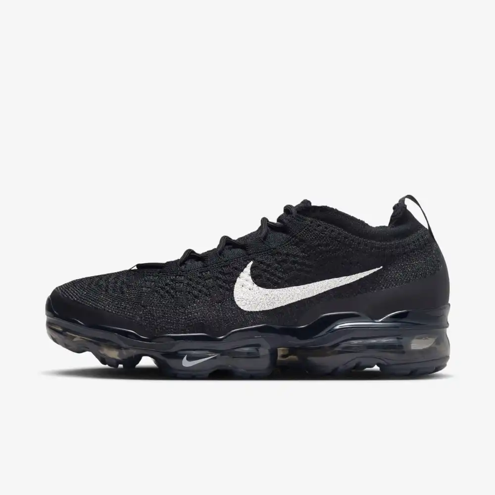

História do Nike Air VaporMax:
Lançado em 2017, o Nike Air VaporMax representou uma revolução na linha Air Max ao apresentar a primeira entressola feita inteiramente pela unidade Air visível, sem a tradicional espuma entre a sola e a bolha de ar. Isso resultou em um tênis ultraleve, com amortecimento direto e máximo retorno de energia.
Desenvolvido por uma equipe liderada por Tinker Hatfield e Terry Taylor, o VaporMax traz um design futurista e minimalista, combinando tecnologia avançada com estética moderna. O cabedal geralmente usa materiais leves e respiráveis, como o Flyknit, para conforto e flexibilidade.
O VaporMax é reconhecido como um marco tecnológico da Nike, elevando o conceito de amortecimento a um novo patamar e conquistando tanto corredores quanto fãs de moda.